day04【 Idea、方法】今日内容教学目标第一章 开发工具IntelliJ IDEA1.1 开发工具概述1.2 IDEA软件安装1.3 IDEA首次驱动1.4 创建包和类1.5 字体设置1.6 IDEA的项目目录1.7 IDEA常用快捷键1.9 IDEA导入和关闭项目第二章 方法2.1 回顾--方法的定义和调用2.2 定义方法的格式详解2.3 定义方法的两个明确2.4 调用方法的流程图解2.5 定义方法练习 练习一练习二练习三2.6 定义方法的注意事项2.7 调用方法的三种形式2.8 方法重载2.9 方法重载练习练习一练习二练习三
掌握idea开发工具的安装
能够使用idea创建Java工程
能够使用idea创建包和类
了解idea的Java工程目录
了解idea字体的设置
掌握idea常用开发快捷键
了解项目的导入和删除
掌握方法定义的参数和返回值含义
了解方法的调用过程
了解方法的三种调用形式
掌握方法定义的注意事项
掌握方法重载的概念
能够判断出方法的重置
IDEA是一个专门针对Java的集成开发工具(IDE)，由Java语言编写。所以，需要有JRE运行环境并配置好环境变量。 它可以极大地提升我们的开发效率。可以自动编译，检查错误。在公司中，使用的就是IDEA进行开发。
此软件集成了32位和64位，双击 ideaIU-2017.3.2.exe 进入安装。
首次新建项目时，默认的Project Location路径有问题，如 c:\xxx ，正确写法为 c:\xxx 。更改后不会再 出现此类问题。 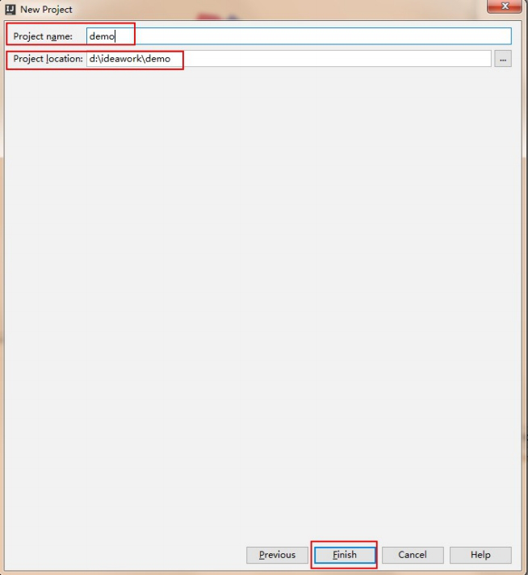
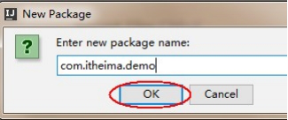
右键点击 com.itheima.demo ，选择 Show in Explorer ，会发现创建包的目录结构。
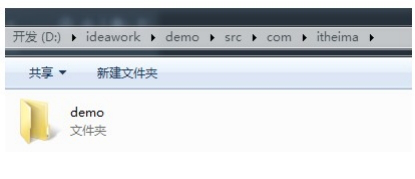
可见 com.itheima.demo ，表示创建了多级的文件夹。
小贴士：所谓包，就是文件夹，用来对类文件进行管理。
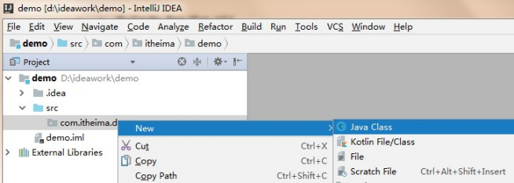
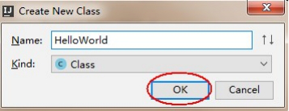
IDEA工具的默认字体非常小，代码编辑器和控制台的输出字体都需要进行调整。
我们创建的项目，在d:\ideawork 目录的demo下 .idea 目录和 demo.iml 和我们开发无关，是IDEA工具自己使用的 out 目录是存储编译后的.class文件 src 目录是存储我们编写的.java源文件
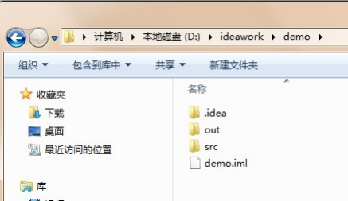
| 快捷键 | 功能 | |
|---|---|---|
| Alt+Enter | 导入包，自动修正代码 | |
| Ctrl+Y | 删除光标所在行 | |
| Ctrl+D | 复制光标所在行的内容，插入光标位置下面 | |
| Ctrl+Alt+L | 格式化代码 | |
| Ctrl+/ | 单行注释 | |
| Ctrl+Shift+/ | 选中代码注释，多行注释，再按取消注释 | |
| Alt+Ins | 自动生成代码，toString，get，set等方法 | |
| Alt+Shift+上下箭头 | 移动当前代码行 |
1.8 IDEA修改快捷键 在IDEA工具中， Ctrl+空格 的快捷键，可以帮助我们补全代码，但是这个快捷键和Windows中的输入法切换快捷键冲突，需要修改IDEA中的快捷键。 File->Settings->keymap->Main menu->code->Completion->Basic 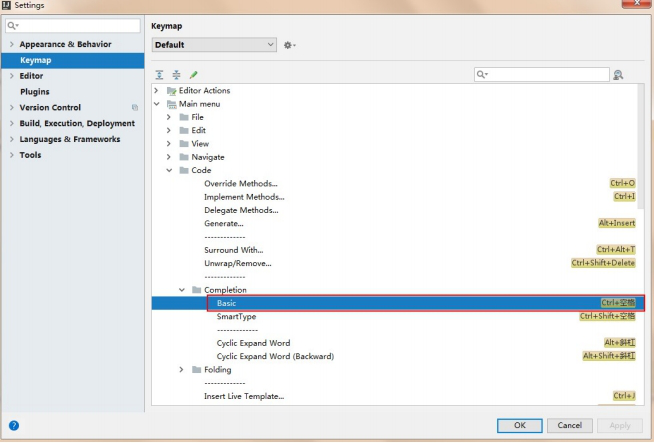 双击 Basic->remove ->Ctrl+空格 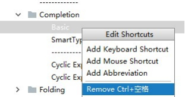 再次双击 Basic->Add Keyboard->键入 Alt+/->点击OK 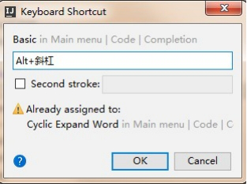
关闭IDEA中已经存在的项目， File->Close Project 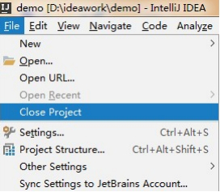 File->Close Project 这时IDEA回到了刚启动界面，点击项目上的 X ，IDEA中就没有这个项目了 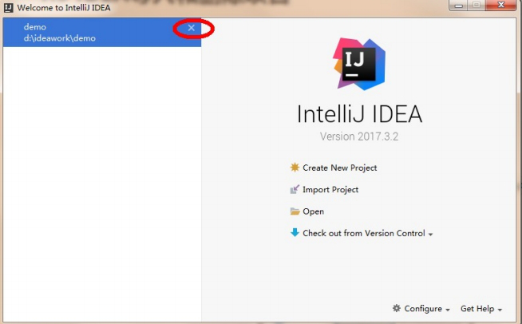 在IDEA的启动界面上，点击 OPEN ，选择项目目录即可 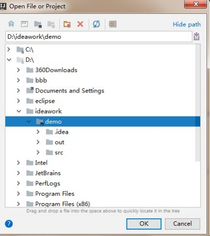
小贴士： 课后若想通过IDEA同时开启多个项目，点击OPEN打开项目时，点击New Window按钮 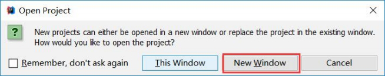
前面的课程中，使用过嵌套循环输出矩形，控制台打印出矩形就可以了，因此将方法定义为 void ，没有返回值。 在主方法 main 中直接被调用。
xxxxxxxxxxpublic class Method_Demo1 { public static void main(String[] args) { print(); } private static void print() { for (int i = 0;i < 5;i++) { for (int j = 0;j < 8;j++) { System.out.print("*"); } System.out.println (); } }}print 方法被 main 方法调用后直接输出结果，而 main 方法并不需要 print 方法的执行结果，所以被定义为 void 。
xxxxxxxxxx 修饰符 返回值类型 方法名(参数列表){ //代码省略... return 结果;}小贴士：return 结果; 这里的"结果"在开发中，我们正确的叫法成为方法的返回值
xxxxxxxxxxpublic class Method_Demo2 { public static void main(String[] args) { // 调用方法getSum，传递两个整数，这里传递的实际数据又称为实际参数 // 并接收方法计算后的结果，返回值 int sum = getSum(5, 6); System.out.println (sum); } /* 定义计算两个整数和的方法 返回值类型，计算结果是int 参数：不确定数据求和，定义int参数.参数又称为形式参数 */ public static int getSum(int a,int b) { return a + b; }}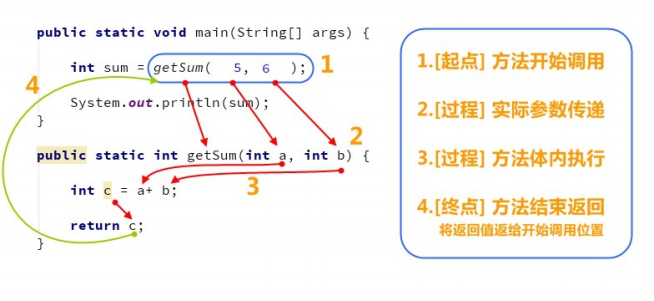
比较两个整数是否相同
xxxxxxxxxxpublic class Method_Demo3 { public static void main(String[] args) { //调用方法compare，传递两个整数 //并接收方法计算后的结果，布尔值 boolean bool = compare (3, 8); System.out.println (bool); } /* 定义比较两个整数是否相同的方法 返回值类型，比较的结果布尔类型 参数：不确定参与比较的两个整数 */ public static boolean compare (int a,int b) { if (a == b) { return true; } else { return false; } }}计算1+2+3...+100的和
xxxxxxxxxxpublic class Method_Demo4 { public static void main(String[] args) { //调用方法getSum //并接收方法计算后的结果，整数 int sum = getSum(); System.out.println (sum); } /* 定义计算1~100的求和方法 返回值类型，计算结果整数int 参数：没有不确定数据 */ public static int getSum() { //定义变量保存求和 int sum = 0; //从1开始循环，到100结束 for (int i = 1;i <= 100; i++) { sum = sum + i; } return sum; }}实现不定次数打印
xxxxxxxxxxpublic class Method_Demo5 { public static void main(String[] args) { //调用方法printHelloWorld，传递整数 printHelloWorld(9); } /* 定义打印HelloWorld方法 返回值类型，计算没有结果 void 参数：不确定打印几次 */ public static void printHelloWorld (int n) { for (int i = 0;i < n;i++) { System.out.println ("HelloWorld" ); } }}xxxxxxxxxx// 返回值类型要求是intpublic static int getSum() { return 5;// 正确，int类型 return 1.2;// 错误，类型不匹配 return true;// 错误，类型不匹配}xxxxxxxxxxpublic static int getSum(int a,int b) { return a + b; System.out.println ("Hello" );// 错误，return已经结束，这里不会执行，无效代码}xxxxxxxxxxpublic static void main(String[] args) { print();}public static void print() { System.out.println ("方法被调用");}xxxxxxxxxxpublic static void main(String[] args) { int sum = getSum(5,6); System.out.println (sum);}public static int getSum(int a,int b) { return a + b;}xxxxxxxxxxpublic static void main(String[] args) { System.out.println (getSum (5,6));}public static int getSum(int a,int b) { return a + b;}xxxxxxxxxx不能用输出语句调用 void 类型的方法。因为方法执行后没有结果，也就打印不出任何内容。
xxxxxxxxxxpublic static void main(String[] args) { System.out.println (printHello ());// 错误，不能输出语句调用void类型方法}public static void printHello() { System.out.println ("Hello" );}比较两个数据是否相等。参数类型分别为两个 byte 类型，两个 short 类型，两个 int 类型，两个 long 类型，并 在 main 方法中进行测试。
xxxxxxxxxxpublic class Method_Demo6 { public static void main(String[] args) { //定义不同数据类型的变量 byte a = 10; byte b = 20; short c = 10; short d = 20; int e = 10; int f = 10; long g = 10; long h = 20; // 调用 System.out.println (compare(a, b)); System.out.println (compare(c, d)); System.out.println (compare(e, f)); System.out.println (compare(g, h)); } // 两个byte类型的 public static boolean compare (byte a, byte b) { System.out.println ("byte"); return a == b; } // 两个short类型的 public static boolean compare (short a, short b) { System.out.println ("short"); return a == b; } // 两个int类型的 public static boolean compare (int a,int b) { System.out.println ("int"); return a == b; } // 两个long类型的 public static boolean compare (long a, long b) { System.out.println ("long"); return a == b; }}判断哪些方法是重载关系。
xxxxxxxxxx public static void open(){}public static void open(int a){}static void open(int a,int b){}public static void open(double a,int b){}public static void open(int a,double b){}public void open(int i,double d){}public static void OPEN(){}public static void open(int i,int j){}模拟输出语句中的 println 方法效果，传递什么类型的数据就输出什么类型的数据，只允许定义一个方法名 println 。
public class Method_Demo7 { public static void println(byte a) { System.out.println (a); } public static void println(short a) { System.out.println (a); } public static void println(int a) { System.out.println (a); } public static void println(long a) { System.out.println (a); } public static void println(float a) { System.out.println (a); } public static void println(double a) { System.out.println (a); } public static void println(char a) { System.out.println (a); } public static void println(boolean a) { System.out.println (a); } public static void println(String a) { System.out.println (a); }}